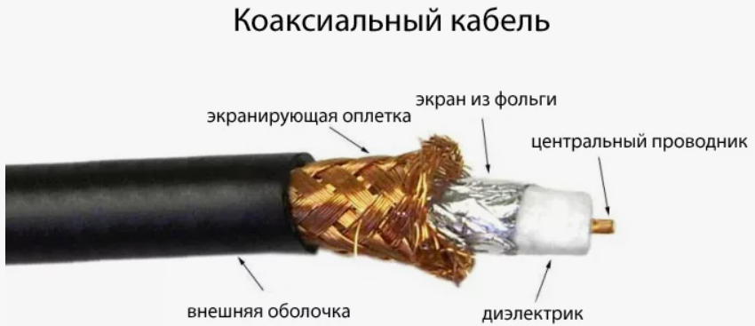
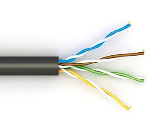
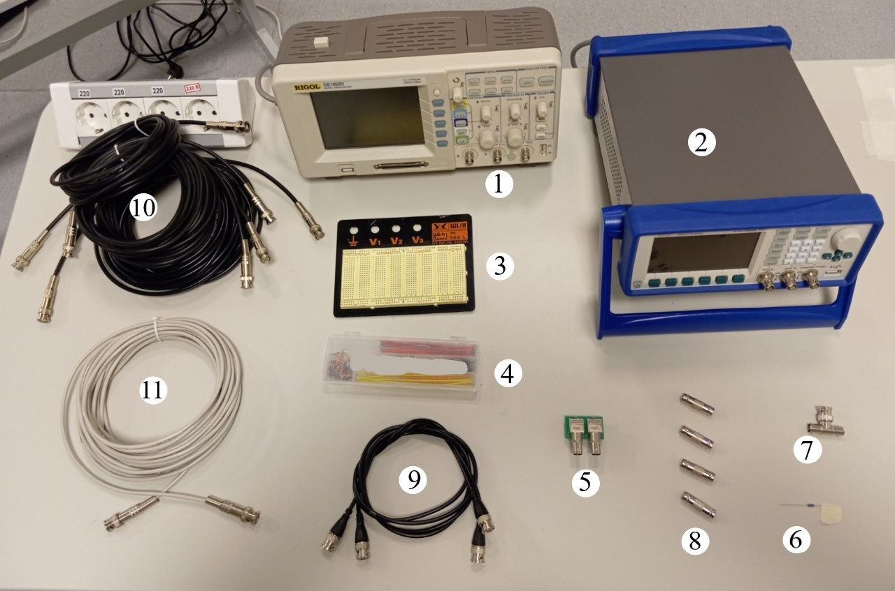
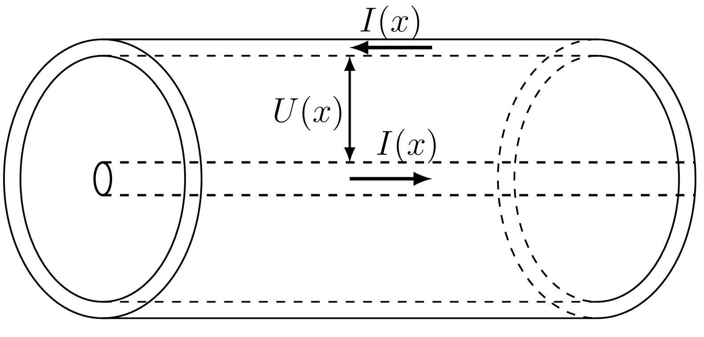
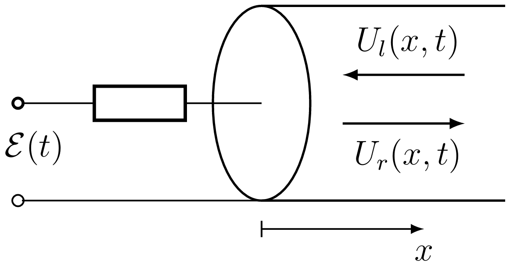
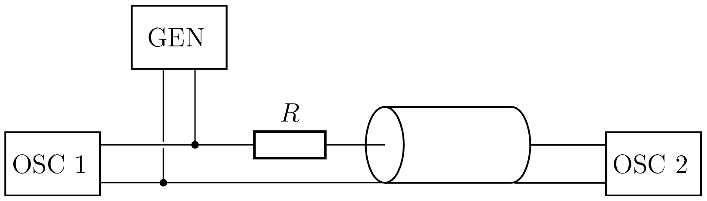
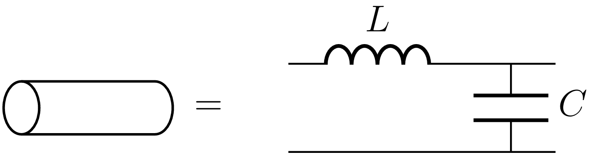

Y25 (2025) — English translation
A two-wire line is a system of two closely spaced conductors used to transmit electrical signals. Traveling waves of current and voltage can propagate along a two-wire line. A two-wire line per unit length has a capacitance $\mathcal C$ and an inductance $\mathcal L$. The characteristic of a two-wire line is the characteristic impedance $Z$:\[Z=\sqrt{\dfrac{\mathcal L}{\mathcal C}},\]wave propagation speed in the line:\[v=\dfrac{1}{\sqrt{\mathcal L\mathcal C}}.\]The most common implementation of a two-wire line is a coaxial cable, with the help of which a large number of electronic devices are connected instruments (for example, generators and oscilloscopes). The structure of a coaxial cable is shown in the figure below.

Another common example of implementing a two-wire line is twisted pair, on which most modern physical communication networks (in particular, the World Wide Web) are based. The structure of a twisted pair is shown in the figure below:

This problem is devoted to the study of two-wire lines. Parts A and B examine standard coaxial cable, while Part C examines twisted pair cable.

Oscilloscope Generator Breadboard Personal set of jumpers BNC-board adapter Resistor of unknown resistance $R$ BNC tee Male-to-male BNC connector (4 pcs.) Short BNC-BNC wire with characteristic impedance $50~Ом$ (2 pcs.) BNC-BNC wire with characteristic impedance $50~Ом$ and length $5~м$ (5 pcs.) BNC-BNC wire (twisted pair) with unknown characteristic impedance, length $10~м$
Long cables are wound into a coil and secured with ties specifically for ease of handling. Do not remove cable ties or unwind cables! If used carelessly, the BNC lugs on long cables may become damaged. Try not to pull them or bend them at very large angles. If you suspect that one of the cables is faulty, you can check this by connecting it directly to the generator and oscilloscope and making sure that it is transmitting the signal correctly. If a malfunction is detected, immediately contact the auditorium duty officer. Some of the BNC lugs may be tight to fit into the board connector. This does not mean they are malfunctioning.
Consider a coaxial cable located along the $Ox$ axis. Let's consider the section $x = \mbox{const}.$ Let us denote by $U(x, t)$ the voltage between the internal and external wires at the point with coordinate $x$ at the moment of time $t$. Through the section under consideration, current $I(x, t)$ flows through the outer wire, and the same current flows through the inner wire in the opposite direction.

The easiest way to examine a coaxial cable is to excite two voltage waves in it, propagating in opposite directions. To do this, an alternating voltage source $\mathcal{E}(t)$ is connected to the cable through a resistor with resistance $R$ (see figure). The size of the connecting wires compared to the voltage wavelength in the cable can be neglected. Let us denote $U_l(x, t)$ – the voltage distribution in a wave propagating in the positive direction of the $Ox$ axis, $U_r(x, t)$ – the same for a wave propagating in the opposite direction. The currents in each of the waves are related to the voltages through the so-called wave impedance $Z$: $$I_l(x, t) = -\frac{U_l(x,t)}{Z} ,\qquad I_r(x, t) = \frac{U_r(x, t)}{Z}$$ Тогда $$U(x, t) = U_l(x, t) + U_r(x, t), \\ I(x, t) = I_l(x, t) + I_r(x, t).$$ Начало кабеля расположено в точке $x = 0$.
$$I_l(x, t) = -\frac{U_l(x,t)}{Z} ,\qquad I_r(x, t) = \frac{U_r(x, t)}{Z}$$
$$U(x, t) = U_l(x, t) + U_r(x, t), \\ I(x, t) = I_l(x, t) + I_r(x, t).$$ Начало кабеля расположено в точке $x = 0$.

Now let the coaxial cable have a length $L$ and at the end it is connected to an oscilloscope with a very high internal resistance. A step voltage is applied to the resistor:\[\mathcal{E}(t)=\begin{cases}0,& t < 0\\U_0,& t \ge 0\end{cases}\]Due to the fact that the wave travels from the resistor to the oscilloscope and back in a finite time, the voltage on the cable (which is detected by the oscilloscope) begins to increase stepwise, gradually reaching a plateau. Voltage $U(x,t)$ is a solution to the wave equation \[ \frac{\partial^2 }{\partial x^2} U(x,t) - \frac{1}{v^2} \frac{\partial^2}{\partial t^2} U(x,t) = 0,\]which allows us to represent $U(x,t)$ as the sum of two waves traveling to the left and to the right. In this case, the speed of wave propagation along the cable is equal to $v$.
Note: if you were unable to complete steps A1 and A2, use the following expression:\[U(t)=U_0\left[1-\left(\dfrac{R-Z}{R+Z}\right)^{\left\lfloor\frac{Vt}{2L}-\frac{1}{2}\right\rfloor}\right].\]
Assemble the installation shown in the figure:

Due to the non-ideal nature of the author of the problem, the cable sections do not perfectly match in length, so all available points must be used for analysis. Let the voltage supplied from the generator be equal to $U_0$, then the measured values $U_n$ can be nondimensionalized by introducing the value $u(n,m)=U_n/U_0$ for $m$ cable sections. Similarly, for $m$ cable sections, we enter the time $t(n,m)=t_n$.
If you apply low-frequency alternating voltage (i.e., at which the wavelength is much greater than the length of the cable section) to a section of cable, it will behave like a capacitor and coil connected in series. Since the coil impedance can be neglected at low frequencies, the cable capacitance per unit length can be measured with good accuracy.

To find the characteristic impedance of the twisted pair given to you, you can assemble the same circuit as in the first part (see paragraph A3).
Source: https://pho.rs/p/4538